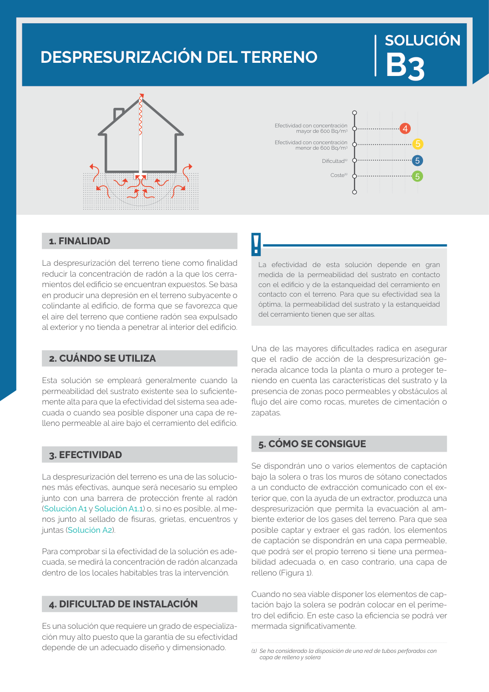

<!doctype html>
<html lang="es"><head><meta charset="utf-8">
<meta name="viewport" content="width=device-width, initial-scale=1">
<title>GUIA · Página física 52</title><link rel="stylesheet" href="../estilo.css">
</head><body>
<nav><a href="../index.html">Índice</a> › <a href="../doc/guia-pdf-f3314b0414fe-sin-fecha-e58e54b822cf.html">GUIA</a></nav>

<h1>GUIA · Página física 52</h1>
<header class="meta"><p><strong>Guia de rehabilitacion frente al radon Fichas</strong> · edición sin-fecha · capa guia</p>
<p>Documento <code>GUIA-PDF-f3314b0414fe</code> · SHA-256 del PDF <code>e58e54b822cf4ab00e258f0eb50c0f06a8c04e3730a7f530d224485e2a5bb02e</code></p>
<p>Página física 52 de 82.</p>
<p><a href="../../contenido/docs/GUIA-PDF-f3314b0414fe/sin-fecha__e58e54b822cf/fuente.pdf#page=52">Copia fiel del PDF fuente</a> · <a href="https://www.codigotecnico.org/pdf/GuiasyOtros/GuiaRadon/Guia_de_rehabilitacion_frente_al_radon+Fichas.pdf">Fuente oficial</a></p>
<p><a href="https://www.codigotecnico.org/Guias/GuiaRadon.html">Ficha de la disposición en la fuente oficial</a></p>
<div class="cita"><p><a href="../../contenido/docs/GUIA-PDF-f3314b0414fe/sin-fecha__e58e54b822cf/fuente.pdf#page=2">Créditos y autoría en el PDF fuente</a>. Reproducción con cita de fuente y autores.</p>
<p>Permiso literal: Se permite la reproducción total o parcial del contenido de este nible en el momento de su publicación. No se aceptará por las institu­ documento siempre y cuando se cite la fuente original</p>
<details><summary>Leer los créditos completos y la autoría</summary><pre class="literal">Este documento ha sido elaborado por el Instituto de ciencias
de la construcción Eduardo Torroja (IETcc) bajo la supervisión
de la Dirección General de Agenda Urbana y Arquitectura del
Ministerio de Transportes, Movilidad y Agenda Urbana (MITMA).

El IETcc, perteneciente al Consejo Superior de Investigaciones
Científicas (CSIC), es el centro de investigación en edificación
de referencia en España. La Unidad de Calidad en la Construc­
ción del IETcc asesora al MITMA en la elaboración del Código
Técnico de la Edificación que, desde el año 2019, cuenta con la
sección HS6 Protección frente a la exposición al radón.

Dirección y Coordinación:
Ministerio de Transportes, Movilidad y Agenda Urbana
 Isabel Marcos Anasagasti
 Raquel Lara Campos
 Eduardo González de Prado
Instituto de ciencias de la construcción Eduardo Torroja CSIC
 Pilar Linares Alemparte

Autoras:
 Pilar Linares Alemparte
 Sonia García Ortega

Colaboradoras:
 Virginia Sánchez Ramos
 Karina Angélica García Pardo

Edita:
 Centro de Publicaciones Secretaría General Técnica
 Ministerio de Transportes, Movilidad y Agenda Urbana©

Entidad colaboradora:
 Consejo Superior de Investigaciones Científicas · CSIC
 Ministerio de Ciencia e Innovación

    Catálogo de publicaciones de la Administración General
    del Estado: publicacionesoficiales.boe.es

    Centro virtual de publicaciones del Ministerio de Transpor­
     tes, Movilidad y Agenda Urbana: www.mitma.gob.es

    Página web del Código Técnico de la Edificación:

                                                                                                                                                                              SECRETARÍA                                                                                                                                                                     GENERAL                                                                                                                                                                         DE    www.codigotecnico.org                                                                                                                                              AGENDA URBANA                                                                                                                                                                           Y VIVIENDA                                                                                                                                                 MINISTERIO                                                                                                           GOBIERNO                                                                                                                           DE                                                                                                                                           TRANSPORTES,                                                                                                                                                 MOVILIDAD                                                                                                             DE ESPAÑA                                                                                                                               Y AGENDA                                                                                                                           URBANA                                                                                                                                                               DIRECCIÓN                                                                                                                                                                     GENERAL                                                                                                                                                                         DE
Maquetación y diseño gráfico:                                                                                                     AGENDA URBANAY ARQUITECTURA
 Lapizmente. Estrategia • Diseño Gráfico


                                                                                                                                             CIENCIAFotografía portada:                                                                                GOBIERNODE ESPAÑA      MINISTERIODEE INNOVACIÓN
 Sonia García Ortega

Los contenidos o ideas recogidas en este documento pertenecen a
sus autores. Este documento está basado en el conocimiento dispo­     Se permite la reproducción total o parcial del contenido de este
nible en el momento de su publicación. No se aceptará por las institu­     documento siempre y cuando se cite la fuente original y a sus
ciones ni los autores implicados responsabilidad de ningún tipo por el                                                                    autores.
uso de estas recomendaciones. Las figuras tienen carácter ilustrativo
y no deben interpretarse como detalles constructivos.</pre></details></div>
<div class="aviso"><strong>Alcance y límites</strong><ul><li>Extracción automática sin revisión técnica humana completa. Contraste tablas, fórmulas, notas y excepciones con el PDF. La edición disponible no determina la vigencia ni la aplicabilidad a un proyecto.</li><li>Guia o documento divulgativo; no es texto normativo.</li><li>Extracción automática; el cotejo humano está pendiente.</li><li>Semántica y tablas no equivalen a validación exhaustiva.</li></ul></div></header>
<nav><a href="guia-pdf-f3314b0414fe-sin-fecha-e58e54b822cf__p0051.html">← Página 51</a> · <a href="guia-pdf-f3314b0414fe-sin-fecha-e58e54b822cf__p0053.html">Página 53 →</a></nav>
<p>Formato: <a href="../../contenido/docs/GUIA-PDF-f3314b0414fe/sin-fecha__e58e54b822cf/pagina/p0052.md">Texto de la página (Markdown)</a></p>
<p><a href="../../contenido/docs/GUIA-PDF-f3314b0414fe/sin-fecha__e58e54b822cf/bloque/p0052.json">JSON de bloques</a></p>
<pre class="literal">Efectividad con concentración 
mayor de 600 Bq/m3
Efectividad con concentración 
menor de 600 Bq/m3
Dificultad(1)
Coste(1)
4
5
5
5
DESPRESURIZACIÓN DEL TERRENO
SOLUCIÓN
B3
La efectividad de esta solución depende en gran 
medida de la permeabilidad del sustrato en contacto 
con el edificio y de la estanqueidad del cerramiento en 
contacto con el terreno. Para que su efectividad sea la 
óptima, la permeabilidad del sustrato y la estanqueidad 
del cerramiento tienen que ser altas.
Una de las mayores dificultades radica en asegurar 
que el radio de acción de la despresurización ge­
nerada alcance toda la planta o muro a proteger te­
niendo en cuenta las características del sustrato y la 
presencia de zonas poco permeables y obstáculos al 
flujo del aire como rocas, muretes de cimentación o 
zapatas.
5. CÓMO SE CONSIGUE
Se dispondrán uno o varios elementos de captación 
bajo la solera o tras los muros de sótano conectados 
a un conducto de extracción comunicado con el ex­
terior que, con la ayuda de un extractor, produzca una 
despresurización que permita la evacuación al am­
biente exterior de los gases del terreno. Para que sea 
posible captar y extraer el gas radón, los elementos 
de captación se dispondrán en una capa permeable, 
que podrá ser el propio terreno si tiene una permea­
bilidad adecuada o, en caso contrario, una capa de 
relleno (Figura 1).
Cuando no sea viable disponer los elementos de cap­
tación bajo la solera se podrán colocar en el períme­
tro del edificio. En este caso la eficiencia se podrá ver 
mermada significativamente.
1. FINALIDAD
La despresurización del terreno tiene como finalidad 
reducir la concentración de radón a la que los cerra­
mientos del edificio se encuentran expuestos. Se basa 
en producir una depresión en el terreno subyacente o 
colindante al edificio, de forma que se favorezca que 
el aire del terreno que contiene radón sea expulsado 
al exterior y no tienda a penetrar al interior del edificio.
2. CUÁNDO SE UTILIZA
Esta solución se empleará generalmente cuando la 
permeabilidad del sustrato existente sea lo suficiente­
mente alta para que la efectividad del sistema sea ade­
cuada o cuando sea posible disponer una capa de re­
lleno permeable al aire bajo el cerramiento del edificio.
3. EFECTIVIDAD
La despresurización del terreno es una de las solucio­
nes más efectivas, aunque será necesario su empleo 
junto con una barrera de protección frente al radón 
(Solución A1 y Solución A1.1) o, si no es posible, al me­
nos junto al sellado de fisuras, grietas, encuentros y 
juntas (Solución A2).
Para comprobar si la efectividad de la solución es ade­
cuada, se medirá la concentración de radón alcanzada 
dentro de los locales habitables tras la intervención.
4. DIFICULTAD DE INSTALACIÓN
Es una solución que requiere un grado de especializa­
ción muy alto puesto que la garantía de su efectividad 
depende de un adecuado diseño y dimensionado.
(1)  Se ha considerado la disposición de una red de tubos perforados con 
capa de relleno y solera
</pre>
<figure><a href="../../contenido/docs/GUIA-PDF-f3314b0414fe/sin-fecha__e58e54b822cf/figura/p0052.png"></a><figcaption>Página visual 52, para contrastar fórmulas, tablas y figuras.</figcaption></figure><h2>Tablas extraídas</h2><p>Datos candidatos: compruebe celdas y notas en el PDF.</p><ul><li><a href="../../contenido/docs/GUIA-PDF-f3314b0414fe/sin-fecha__e58e54b822cf/tabla/p0052_t01.json">p0052_t01.json</a></li></ul>
<h2>Segmentos que incluyen esta página</h2><ul>
<li><a href="../apartado/guia-pdf-f3314b0414fe-sin-fecha-e58e54b822cf__a0179.html">a0179 · Solucion B3 - Despresurizacion del terreno</a></li>
<li><a href="../apartado/guia-pdf-f3314b0414fe-sin-fecha-e58e54b822cf__a0180.html">a0180 · Solucion B3 - Despresurizacion del terreno / DESPRESURIZACIÓN DEL TERRENO SOLUCIÓN</a></li>
<li><a href="../apartado/guia-pdf-f3314b0414fe-sin-fecha-e58e54b822cf__a0181.html">a0181 · Solucion B3 - Despresurizacion del terreno / B3</a></li>
<li><a href="../apartado/guia-pdf-f3314b0414fe-sin-fecha-e58e54b822cf__a0182.html">a0182 · 5. CÓMO SE CONSIGUE</a></li>
<li><a href="../apartado/guia-pdf-f3314b0414fe-sin-fecha-e58e54b822cf__a0183.html">a0183 · 1. FINALIDAD</a></li>
<li><a href="../apartado/guia-pdf-f3314b0414fe-sin-fecha-e58e54b822cf__a0184.html">a0184 · 2. CUÁNDO SE UTILIZA</a></li>
<li><a href="../apartado/guia-pdf-f3314b0414fe-sin-fecha-e58e54b822cf__a0185.html">a0185 · 3. EFECTIVIDAD</a></li>
<li><a href="../apartado/guia-pdf-f3314b0414fe-sin-fecha-e58e54b822cf__a0186.html">a0186 · 4. DIFICULTAD DE INSTALACIÓN</a></li>
</ul>
<footer>Generado estáticamente desde el corpus normalizado; sin JavaScript ni servicios externos. El HTML es una vista reproducible; conserve la fuente y la edición al citar.</footer>
</body></html>
